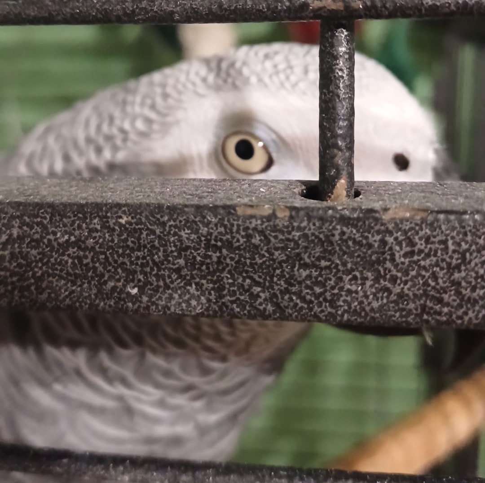

testo link generale
vai in fondo
testo link target _self per default
testo link target _blank per nuova pagina
testo link target _parent pagina interna
testo link target _top corpo intero della pagina

invia mail a te stesso
rimando a BasicStyles.html (stessa cartella non richiede /)
rimando a HyperlinksOld.html (si scrive Rimando/HyperlinksOld.html per partire dalla stessa cartella)
link a pulsante
torna in cima